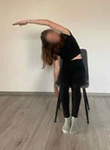
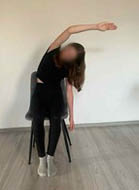
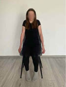

Aktywność fizyczna
5.9. Ćwiczenie 9
Pozycja siedząca. Ruch: zrób skłon tułowia w prawo, unosząc jednocześnie lewą rękę do góry i kierując ja w stronę prawą. Staraj się poczuć, jak żebra z lewej strony bardziej się rozciągają. Prawą ręką sięgaj w kierunku podłogi. Powtórz na drugą stronę (rycina V.5.11).
5.10. Ćwiczenie 10
Pozycja siedząca. Ruch: unieś mocno barki w kierunku uszu, wykonując wdech. Z wydechem rozluźnij je (rycina V.5.12).


Rycina V.5.11.
Skłony boczne tułowia
Rycina V.5.12.
Unoszenie barków
468
